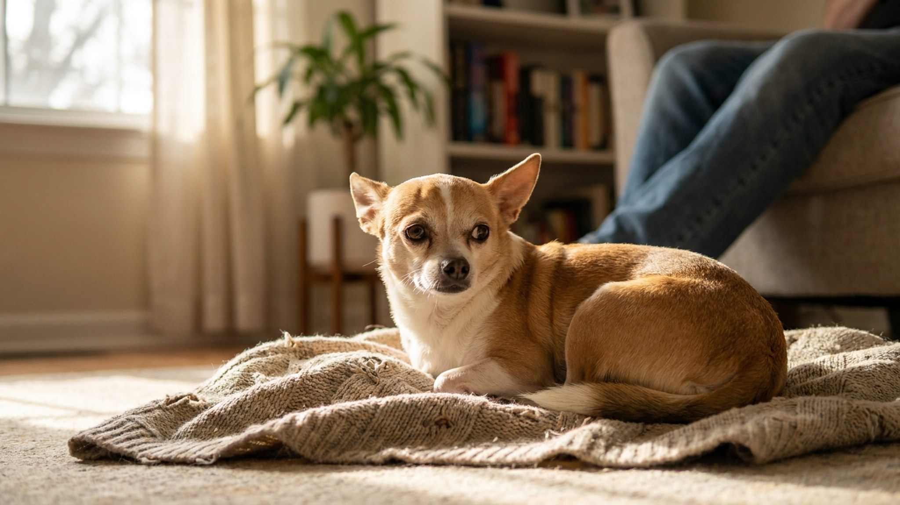

Чихуахуа: 5 ошибок, которые делают маленькую собаку несчастной

13 июня 2026 · 8 минут чтения · Породы собак
Чихуахуа весит меньше килограмма, но смотрит на мир без страха — пока хозяин не начинает его «защищать». Гиперопека превращает уверенную маленькую собаку в тревожную и агрессивную. Пять самых частых ошибок владельцев чихуахуа — и как их исправить, не потеряв связь с питомцем.
🐾 Всё о вашем питомце — в одном приложении
AI-ветеринар, дневник, напоминания о прививках и уходе. Установите AnimaLife — это бесплатно, в Telegram и MAX.
Открыть в Telegram → Открыть в MAX →
Ошибка 1: «он такой маленький, можно не дрессировать»
Чихуахуа кусает не меньше крупных собак — просто следов меньше. Маленький размер создаёт у хозяина иллюзию, что дрессировка не нужна: ну и что, что рычит, он же крошечный. Но собака с непроработанными командами и без границ становится тиранически доминантной в доме.
- Чихуахуа — порода с сильным характером и высоким интеллектом. Она прекрасно обучается при правильном подходе.
- Базовые команды (сидеть, лежать, ко мне, место) формируют структуру и дают собаке ощущение предсказуемости.
- Начинать обучение — с первой недели в доме. Позитивное подкрепление работает для чихуахуа лучше любого принудительного метода.
- Команда «нельзя» или «место» должна работать одинаково для всех членов семьи — иначе собака быстро вычислит, с кем можно.
Ошибка 2: брать на руки при любом признаке страха
Чихуахуа зарычал на прохожую собаку — хозяин тут же поднимает его на руки. Именно это закрепляет проблемное поведение: собака понимает, что рычание вызывает желаемый результат — её поднимают и «спасают».
- Поднять на руки при страхе — значит подтвердить: «да, это опасно, ты правильно испугался».
- Рабочая стратегия: не реагировать на рычание подъёмом. Спокойно пройти мимо источника страха, затем похвалить за успокоение.
- Чихуахуа, которого никогда не ставят на землю рядом с другими собаками, не учится нормальному собачьему общению.
- Помощь кинолога при выраженной реакционности — не признак провала, а нормальный инструмент.
Ошибка 3: не гулять «потому что маленький»
Некоторые владельцы чихуахуа считают, что маленькой собаке достаточно туалетного лотка дома и нескольких метров по коридору. Это одна из самых разрушительных стратегий для этой породы.
- Чихуахуа — активная, любопытная собака с потребностью в исследовании мира через нос и движение.
- Без прогулок накапливается невыброшенная энергия, растёт тревожность, появляется деструктивное поведение.
- Минимум: 2 прогулки в день по 20–30 минут. В холодную погоду — одежда, но не отказ от улицы.
- Чихуахуа хорошо переносит прогулки в сумке-переноске как дополнение, но не замену ходьбе на своих лапах.
Ошибка 4: кормить «по-человечески» и с рук
Маленький размер создаёт соблазн: дать кусочек со стола, угостить с ложки, пожалеть и добавить ещё. Для чихуахуа это быстро приводит к двум проблемам — лишнему весу и навязчивому попрошайничеству.
- Чихуахуа весом 1,5–2 кг — один кусочек сыра составляет значительную часть его суточного калоража.
- Еда со стола формирует привычку попрошайничать и нарушает субординацию в доме.
- Режим кормления: 2–3 раза в день из миски, корм для мелких пород. Без свободного доступа.
- Чихуахуа-щенки и очень маленькие особи требуют более частого кормления — уточните режим у ветеринара.
- Вес контролируйте раз в месяц: взрослый чихуахуа должен весить 1,5–3 кг.
Ошибка 5: игнорировать зубы и дрожание
Дрожание чихуахуа — не всегда «он мёрзнет» или «он нервный». Иногда это сигнал боли или дискомфорта. Зубы — хроническая проблема породы, которую владельцы замечают слишком поздно.
- Зубы чихуахуа: чистить минимум 3 раза в неделю. Порода входит в группу высокого риска по болезням дёсен и потере зубов.
- Молочные зубы у чихуахуа нередко не выпадают сами — это создаёт скученность и проблемы с прикусом. Вопрос к ветеринару при первом осмотре.
- Дрожание: различайте эмоциональное (возбуждение, страх) и физическое. Дрожь у чихуахуа в тёплом помещении без видимой причины — повод к врачу.
- Надколенник: как и у других мелких пород, чихуахуа предрасположен к вывиху надколенника. Периодическая хромота — не «случайно запнулся», а повод к осмотру.
- Плановые визиты: раз в год. Чихуахуа живут 14–17 лет — регулярная профилактика напрямую влияет на качество этой долгой жизни.
Что стоит знать о чихуахуа до покупки
Чихуахуа — порода не для всех, и дело не в размере. Это собака с сильной привязанностью, которая плохо переносит одиночество, требует обучения и ежедневного общения.
- Чихуахуа привязывается к одному человеку — остальных может игнорировать или встречать с недоверием.
- Порода не подходит для домов с маленькими детьми без строгих правил обращения с собакой.
- Чихуахуа хорошо живёт в однокомнатной квартире — если получает нагрузку и внимание.
- Приобретайте только у проверенных заводчиков: «карманные» и «сверхминиатюрные» особи весом менее 1 кг часто имеют серьёзные проблемы со здоровьем.
Три вещи, которые делают чихуахуа счастливым
При правильном подходе чихуахуа — уверенная, жизнерадостная и преданная собака. Три основы:
- Структура: режим кормления, прогулок, игр и сна. Предсказуемость снижает тревожность.
- Обучение: даже три команды, выученные с первого месяца, дают собаке уверенность и понимание правил.
- Прогулки на своих лапах: чихуахуа должен ходить, нюхать, исследовать мир — это не опционально.
🐾 Спросите AI-ветеринара прямо сейчас
AnimaLife — приложение, где AI-ветеринар отвечает на вопросы о кошке или собаке 24/7. Бесплатно, без записи и очередей.
Открыть в Telegram → Открыть в MAX →
🐾 Понравился разбор?
Подпишитесь на канал — каждый день разбираем по одному тревожному симптому у кошек и собак: что в пределах нормы, а когда пора к врачу. Подпишитесь, чтобы не пропустить разбор, который может спасти здоровье вашего питомца.
Материал носит информационный характер и не заменяет очную консультацию ветеринара.
← Все статьи · Открыть AnimaLife в Telegram · RSS